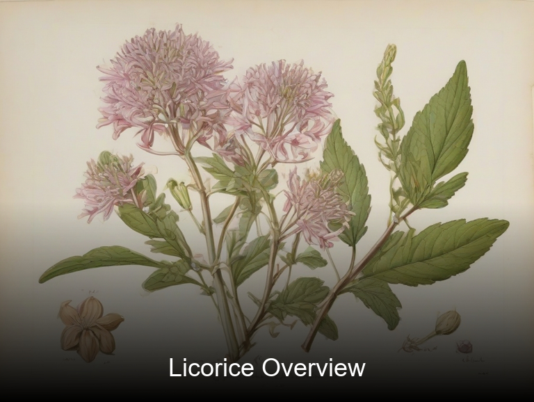
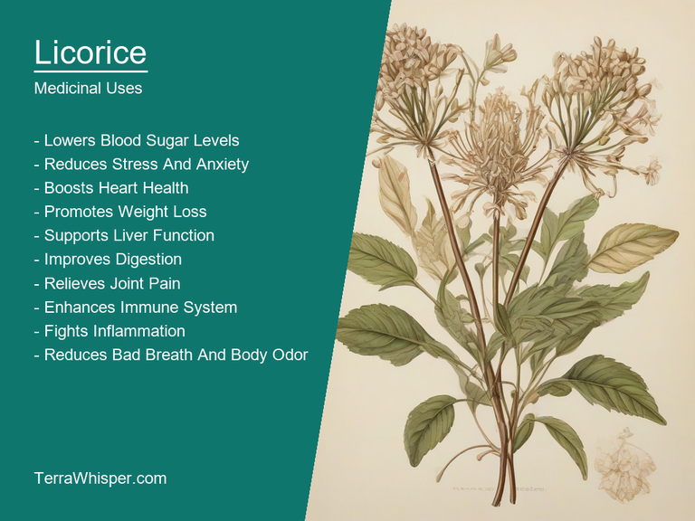
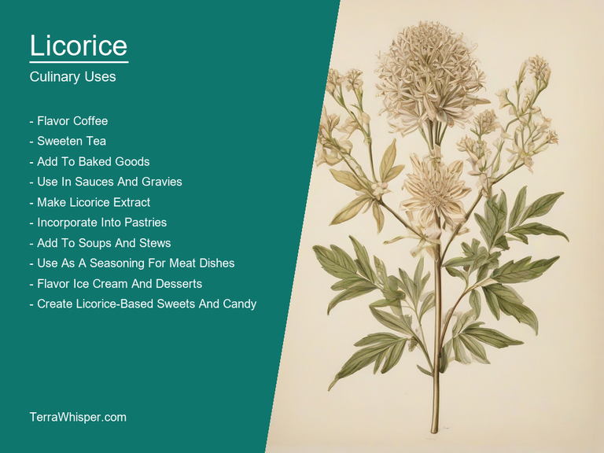
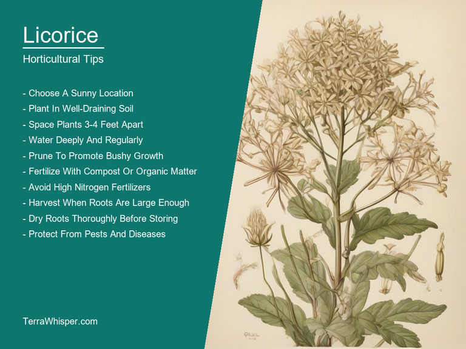
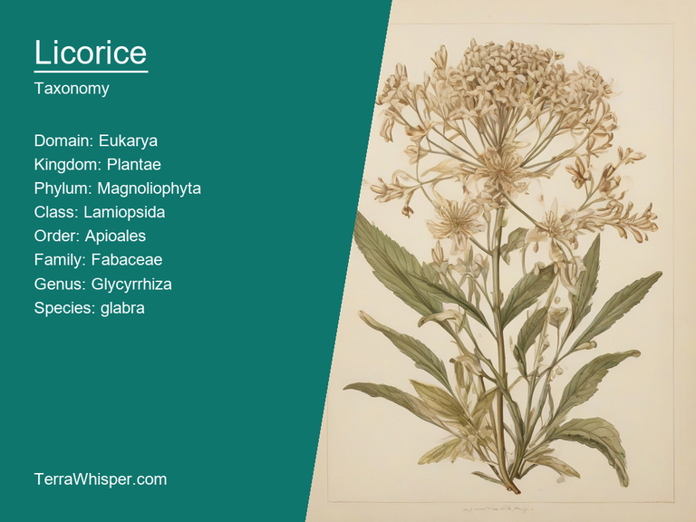
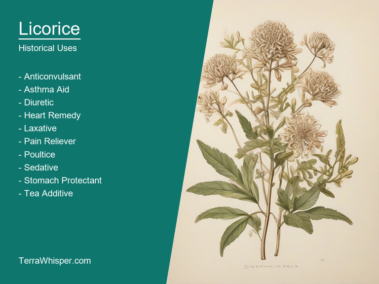

Licorice, scientifically known as Glycyrrhiza glabra, is a remarkable herbaceous leguminous perennial plant with various medicinal, culinary, horticultural, ornamental, botanical, and historical attributes. The plant has been in use since ancient times for its medicinal properties.
From the culinary aspect, licorice can be used as a flavoring agent to give sweeter flavors in foods and beverages without actual sugar. It is also an essential ingredient in numerous traditional sweet treats like Turkish Delight, Danish liquorices and Greek Pasteli. Moreover, it has been found useful for medicinal purposes such as treating respiratory diseases, stomach ulcers, digestive disorders, liver disease, and inflammation.
In the horticultural sphere, licorice plants are often grown for their beautiful flower arrangements, especially during summer months. Its foliage is also attractive and has been used in landscaping projects to add a touch of green. The plant can adapt to different climates, soil types, and light conditions making it easy to grow.
As far as botanical and historical aspects are concerned, Glycyrrhiza glabra originated from the eastern Mediterranean, spreading gradually towards other regions like Asia and Europe. It is known for its tuberous roots that contain glycyrrhizin, a compound responsible for giving the plant its sweet taste. The ancient Egyptians, Greeks, and Romans were all well-acquainted with this versatile herb.
From medicine to cuisine, licorice (Glycyrrhiza glabra) has played a vital role in human life for centuries. Its uses have evolved, transcending through time, adapting to various cultures and environments. This plant is not just significant because of its sweet taste but also due to the numerous benefits it provides. Licorice truly exemplifies nature's perfect combination of taste, beauty, and healing properties that enrich our lives in numerous ways.
In this article, you will discover what are the medicinal and culinary uses of licorice. Then, you'll learn how to cultivate it, what is its botanical profile, and how it was used historically.
Licorice (Glycyrrhiza glabra) has many health benefits, such as treating respiratory issues, easing digestive problems, and soothing skin conditions. This herb can be effective for treating common ailments like coughs, colds, indigestion, ulcers, heartburn, asthma, and eczema. In some instances, it may also help with more severe issues such as arthritis and chronic fatigue syndrome.
The following illustration lists the most important uses of licorice in medicine.

The medicinal constituents of licorice are mainly flavonoids and polyphenols which possess antioxidant, anti-inflammatory, and antimicrobial properties. These compounds work together to provide a range of health benefits that can help alleviate various symptoms and promote overall wellbeing. The plant's natural sugar compound called glycyrrhizin is responsible for its sweet taste while contributing additional anti-inflammatory and immunomodulatory effects.
Licorice is typically used in its root form, which can be found as dried pieces or powdered extracts. The most common preparations include teas, tinctures, supplements, and topical applications such as creams and ointments. These forms allow for the active compounds to be absorbed more easily into your system or directly onto affected areas of the skin.
One main point to consider is that excessive consumption of licorice can lead to certain side effects, like elevated blood pressure and heart rate due to its glycyrrhizin content. People with hypertension, kidney disease, heart disease, or liver problems should consult a healthcare professional before incorporating licorice into their routine. Additionally, pregnant women and those who are breastfeeding may also need to exercise caution when using this herb.
To ensure safety while benefiting from the medicinal aspects of licorice, it's crucial to follow specific precautions. Always consult a healthcare professional before starting any new treatment or making significant changes to your dietary habits. Follow the recommended dosage instructions provided by a reputable brand for purchased supplements and be mindful of potential interactions with other medications you may be taking. Paying attention to these considerations can help ensure that you reap the benefits of licorice while minimizing any potential risks.
Licorice has various culinary uses across different cuisines globally. The roots of the plant are most commonly used for their sweet, slightly bitter taste, making them a popular ingredient in candies and desserts. They can also add unique flavors to savory dishes or alcoholic beverages such as beer. Licorice paste finds uses in marinades, sauces, herb breads, and other culinary preparations.
The following illustration lists the most common uses of licorice for culinary purposes.

The flavor profile of licorice is a complex mix of sweetness derived from glycyrrhizin and bitterness attributed to anethole. This combination gives it a unique taste that stands out among common spices and herbs. Apart from the traditional licorice flavor, its natural sugar content adds a touch of sweetness to any dish where it is used, thus balancing out the flavors in various recipes.
The edible parts of licorice include its roots, which are harvested for culinary purposes. These roots can be dried or preserved by fermenting or pickling them in saltwater. Dried licorice root is usually consumed whole but sometimes, these dry roots are powdered to incorporate into baked goods and other dishes where the texture of the whole roots isn't suitable.
It is important to note that excessive consumption of licorice can lead to potential side effects due to the presence of glycyrrhizin, which may cause high blood pressure and electrolyte imbalances. Moreover, it has been known to increase one's sensitivity to sunlight, leading to sunburns or rashes. Be mindful when incorporating licorice in your cooking and consider individual dietary restrictions for proper precaution.
Licorice plant (Glycyrrhiza glabra) is an annual, herbaceous plant with numerous horticultural aspects that affect its growth and maintenance. It thrives in a specific set of conditions to yield the best results. To cultivate it successfully, one must know these vital factors.
The following illustration lists the most important tips to cutlitvate licorice.

Firstly, to achieve good growth requirements, Licorice demands adequate sunlight, as it is a sun-loving plant. Full exposure to around 8-10 hours of direct sunlight daily is ideal for optimal development. Additionally, the soil should be well-drained and rich in organic matter. A pH ranging from slightly acidic to neutral (6.5 to 7.5) is suitable. Furthermore, it prefers a moderately moist environment without standing water, as this can lead to root rot or bacterial wilt.
Planting tips for Licorice involve preparing the soil and planting the seeds correctly. Ideally, prepare the bed by tilling it up to 15-20cm deep, removing any weeds and rocks. Mix in compost or well-rotted manure at a rate of around 3-4kg per square meter for improved fertility. After creating ridges about 7cm high and 15cm apart on the bed, sow the seeds thinly onto these ridges with 2-3 seeds per ridge. Cover them lightly with soil and press down gently to ensure good contact with the seeds. Finally, water the area thoroughly and maintain consistent moisture until germination occurs.
After the seedlings appear, proper care is necessary for their growth and development. The primary tasks include weeding regularly, providing adequate watering (about 2-3cm per week), and fertilization after flowering. Avoid overwatering as this may cause root rot. It's also important to prevent the plant from becoming too dense, which can lead to disease susceptibility; therefore, thin out overcrowded plants if necessary.
Harvesting tips for Licorice involve waiting until the plant has reached maturity and its roots have developed fully. The best time to harvest is usually during early fall after it starts flowering. To harvest, carefully dig up the root using a spade or garden fork without damaging it. Be sure to leave about 20-25cm of root in the ground to promote new growth for subsequent seasons. After harvesting, dry and store the roots in a cool, dark place away from sunlight for later use in confections, teas, or herbal remedies.
Licorice, with botanical name Glycyrrhiza glabra, belongs to the domain Eukaryota, kingdom Plantae, phylum Magnoliophyta, class Magnoliopsida, order Fabales, family Fabaceae, genus Glycyrrhiza and species Glycyrrhiza. It is also known by its common names such as Licorice root, sweetroot or Indian licorice.
The following illustration display the botanical profile of licorice.

The variants of this plant include the Turkish and Chinese Licorices and different colored types like red, black, and yellow, though the main difference lies in their taste and appearance. Turkish Licorice (Glycyrrhiza glabra var. turanica) has a more intense sweetness due to a higher amount of glycyrrhizin than regular Glycyrrhiza glabra, while Chinese Licorice (Glycyrrhiza glabra var. uralensis) contains more polysaccharides and less glycyrrhizin, making it milder in taste.
The morphology of Glycyrrhiza glabra showcases a perennial herbaceous plant with hairless stems and leaves that can grow up to 0.79 m (2.6 ft) tall. Its flowers are yellow or white, arranged in clusters on long stalks. It produces long pod-like fruit with a single seed each, resembling beans.
The geographic distribution of Licorice spans from Western Europe to Central Asia, primarily growing in Mediterranean regions and the North Temperate Zone. This plant typically grows best in well-drained soil and can be found in various natural habitats such as semi-deserts, rocky areas, grasslands, and shrublands.
The life cycle of Glycyrrhiza glabra involves a series of stages that include germination, growth, flowering, seed production, and eventually death. As an herbaceous perennial plant, it can live for several years, with its roots producing new stems during each growing season.
The etymology of "Licorice" originates from Middle English word 'licourys', which can be further traced back to Old French roots 'liquirise,' meaning sweet and pleasant tasting substance, possibly referring the tasteful aftereffects licoricers produce in mouth. It is also believed that its root derives partly from Latin term "legus" or "lacuca", a variant of plant Liquiritia which has similarities with Glycyrrhiza glabra on account of their shared medicinal properties and uses, thus suggesting the word's possible relation to other sweet-tasting herbal medicine used in ancient times. Regardless how we name it nowadays 'Licorice', its rich history goes way beyond language; encompassing cultural significance across different civilizations since time immemorial for not just mere flavor but also health benefits they possess due the plant's medicinal properties which can help treat various ailments including sore throat, cough and digestive issues.
The following illustration lists the most well known historical uses of licorice.

Licorice has been an integral part of numerous cultures around world with widespread appreciation through traditions related to customs, cuisine as well practices based on medical knowledge accumulated over centuries like its inclusion within 'Yin' category medicinal herbs in Traditional Chinese medicine because they nurture Ying energies while cooling down hot flushes or heat excess. Furthermore various other legends from different parts of the world highlight licoricers symbolism – often related to love, romance and fertility - making it a part folklore just like how we use roses as representation for similar emotions today but more intricately woven within cultural contexts specific only certain societies thus underscoring its importance beyond mere culinary role played nowadays.
Throughout literature, authors often refer to Licorice in their works not merely due the plant' s pleasant taste or distinctive scent characteristics that can lend atmosphere and mood but also because it has been used symbolically for centuries as mentioned previously which reflects upon cultural significance too where writers would sometimes employ licoricers references subtly infusing them into characters motivations. One such example comes from Shakespeare's play 'The Tempest' when Prospre describes Caliban saying "I must eat my dinner, if it be but the pith of a tortoise and not lasagne", here alluding to licorice as an alternative food source which speaks about its adaptability throughout times reflecting changes in culture from old world herbal medicine systems till modern day confectionary products we see today.
Apart cultural references, Licoricers have also been employed by societies due their folklore uses that range widely ranging across various aspects including natural remedies traditional healthcare practices where it was used as a potent healing agent and pain reliever for diverse array of illnesses right up to superstitions associated with them being believed protective measures during certain life events like childbirth or warding off bad omens among tribespeople in distant corners world.